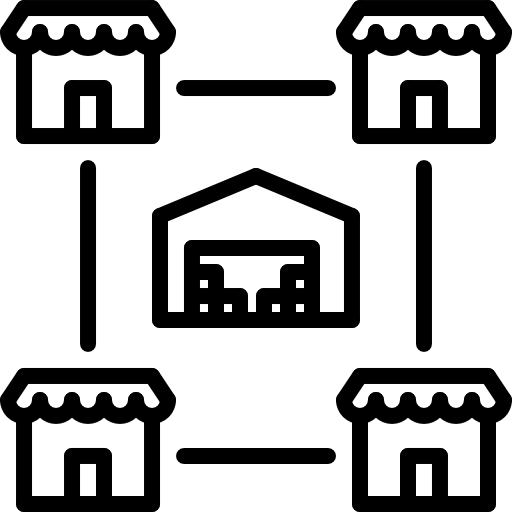

<%@ page language="java" contentType="text/html; charset=UTF-8"
	pageEncoding="UTF-8"%>
<%@ taglib prefix="c" uri="http://java.sun.com/jsp/jstl/core"%>
<!DOCTYPE html>
<html>
<head>
<link rel="stylesheet"
	href="https://stackpath.bootstrapcdn.com/bootstrap/4.3.1/css/bootstrap.min.css"
	integrity="sha384-ggOyR0iXCbMQv3Xipma34MD+dH/1fQ784/j6cY/iJTQUOhcWr7x9JvoRxT2MZw1T"
	crossorigin="anonymous">
<meta charset="UTF-8">
<title>ADsP</title>

<script src="js/check.js"></script>
<style type="text/css">
input[type=radio] {
	width: 20px;
	height: 20px;
}
</style>
</head>
<style>
</style>
<body>
	<header>
		<div class="container px-5 py-5 bg-light">
			<h1 align="center">ADsP 문제 풀이 1일차</h1>
		</div>
	</header>
	<main>
	<div id="questions">

		<hr>
		<h2>
			<div align="center">기업내부 데이터베이스</div>
		</h2>

		<div class="container px-5 py-5" id="Bigtable">
			<form action="javascript:C13()" method="post">

				<br>
							<p style="color:red">20회 기출문제</p>
								<div>
					<h3 class="bg-link pt-3" align="center">1.&nbsp;&nbsp;아래는 데이터베이스를 기반으로 기업 내 구축되는 주요 정보시스템중 하나를 설명한 것 이다.
					&nbsp;가장 적합한 것은 무엇인가?</h3>
				</div>
				<div class="container border border-dark">
					<h4 class="py-3" align="center">기업 전체를 경영자원의 효과적 이용이라는 관점에서 통합적으로 관리하고<br>경영의 효율화를 기하기 위한 시스템</h4>
				</div>
				<div class="row mt-0">
					<div class="col-md-5"></div>
					<div class="col-md-2" style="font-size: 25px" align="left">
						<br> <input type="radio" name="A1" value="1">&nbsp;&nbsp;&nbsp;ERP<br>
						<br> <input type="radio" name="A1" value="2">&nbsp;&nbsp;&nbsp;CRM<br>
						<br> <input type="radio" name="A1" value="3">&nbsp;&nbsp;&nbsp;SCM<br>
						<br> <input type="radio" name="A1" value="4">&nbsp;&nbsp;&nbsp;KMS<br>
					</div>
				</div>
				<br>
				<br>
				<hr>
				<br>
			
				<div>
					<h3 class="bg-link py-3" align="center">2. 알맞는 기업내부 데이터베이스를
						적어주세요.</h3>
				</div>
				<h3 class="py-3" align="center">보&nbsp;&nbsp;&nbsp;&nbsp;&nbsp;기</h3>
				<div class="container border border-dark">
					<h4 class="py-3" align="center">ERP&nbsp;&nbsp;&nbsp;&nbsp;&nbsp;&nbsp;
						BI&nbsp;&nbsp;&nbsp;&nbsp;&nbsp;&nbsp;
						SCM&nbsp;&nbsp;&nbsp;&nbsp;&nbsp;&nbsp;
						EAI&nbsp;&nbsp;&nbsp;&nbsp;&nbsp;&nbsp;
						CRM&nbsp;&nbsp;&nbsp;&nbsp;&nbsp;&nbsp;
						KMS&nbsp;&nbsp;&nbsp;&nbsp;&nbsp;&nbsp; RTE</h4>
				</div>
				<p align="right" style="color: red">!!대소문자 구별</p>
				<br>
				<div class="container px-5 py-2" align="center">
					&nbsp;&nbsp;<br>
					<h4>기업 의사결정 프로세스</h4>
					<br> 답 : <input type="text" id="A21" name="A21">
				</div>
				<br>
				<div class="container px-5 py-2" align="center">
					&nbsp;&nbsp;<br>
					<h4>경영 자원 통합 관리</h4>
					<br> 답 : <input type="text" id="A22" name="A22">
				</div>
				<br>
				<div class="container px-5 py-2" align="center">
					&nbsp;&nbsp;<br>
					<h4>회사 전 부문의 정보를 실시간 방식으로 통합</h4>
					<br> 답 : <input type="text" id="A23" name="A23">
				</div>
				<br>
				<div class="container px-5 py-2" align="center">
					&nbsp;&nbsp;<br>
					<h4>고객 관계 관리</h4>
					<br> 답 : <input type="text" id="A24" name="A24">
				</div>
				<br>
				<div class="container px-5 py-2" align="center">
					&nbsp;&nbsp; <br>
					<h4>지식 관리 시스템</h4>
					<br>답 : <input type="text" id="A25" name="A25">
				</div>
				<br>
				<div class="container px-5 py-2" align="center">
					&nbsp;&nbsp; <br>
					<h4>공급망 관리</h4>
					<br>답 : <input type="text" id="A26" name="A26">
				</div>
				<br>
				<div class="container px-5 py-2" align="center">
					&nbsp;&nbsp; <br>
					<h4>기업 어플리케이션 통합</h4>
					<br>답 : <input type="text" id="A27" name="A27">
				</div>
												<br>
				<hr>
				<br>
							<p style="color:red">20회 기출문제</p>
								<div>
					<h3 class="bg-link pt-3" align="center">3.&nbsp;&nbsp;다음 중 기업 내부 데이터베이스의 활용과 가장 거리가 먼 것은?
					<br>가장 부적절한 것은 무엇인가?</h3>
				</div>

				<div class="row mt-0">
					<div class="col-md-5"></div>
					<div class="col-md-4" style="font-size: 25px" align="left">
						<br> <input type="radio" name="A3" value="1">&nbsp;&nbsp;&nbsp;CRM<br>
						<br> <input type="radio" name="A3" value="2">&nbsp;&nbsp;&nbsp;ITS<br>
						<br> <input type="radio" name="A3" value="3">&nbsp;&nbsp;&nbsp;KMS<br>
						<br> <input type="radio" name="A3" value="4">&nbsp;&nbsp;&nbsp;EAI<br>
					</div>
				</div>
				<br>
				<br>
				<hr>
				<br>
											<p style="color:red">22회 기출문제</p>
								<div>
					<h3 class="bg-link pt-3" align="center">4.&nbsp;&nbsp;아래는 기업 내부에서 사용하는 데이터베이스의 활용에 대한 설명이다.<br>
					(가)에 들어갈 알맞은 용어는?</h3>
				</div><br>
				<div class="container border border-dark">
					<h4 class="py-3" align="center">(가)는 기업이 외부 공급업체 또는 제휴업체와 통합된 정보시스템으로 연계하여 시간과 비용을 최적화시키기 위한 것으로, 자재구매, 생산, 재고, 유통, 판매, 고객데이터로 구성된다.</h4>
				</div>
				<div class="container px-5 py-2" align="center">
					<br>답 : <input type="text" id="A4" name="A4">
				</div>
				<br>
				<br>
				<hr>
				<br>
								<div class="py-5" align="center">
					<button type="submit" class="btn btn-success"><p style="font-size:30px">제출하기</p></button>
				</div>
			
			</form>
		</div>
	</div>
	</main>
		<br><br>
	<footer>
		<div class="container px-5 pb-5">
			<div class="row">

						<div class="col-md-4" align="left">
							<a href="2.html"><div class="btn btn-light"><p style="font-size:30px">이전
									문제</p></div></a>
						</div>

						<div class="col-md-4" align="center">
							<a href="questionList.html"><div class="btn btn-light"><p style="font-size:30px">일차
									선택</p></div></a>
						</div>

				<div class="col-md-4" align="right">
					<a href="4.html"><div class="btn btn-light"><p style="font-size:30px">다음문제</p></div></a>
				</div>
			</div>
		</div>
	</footer>
</body>
</html>